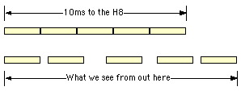
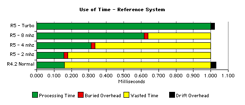

|
Heath8080A — Product Design : Time |
Page last updated |
|
14-September-2002 |
|
|
On this page
• definition Related links |
Time Time is a sufficiently significant topic to deserve a page of its own. Stephen Hawking wrote two books on the subject. Well, two that I could read, anyway. I'll try to be more brief. Defining Time
The Problem
There are other problems. But to get to the point: There is just no way to get a precise emulation of an 8080A processor imbedded in H8 hardware short of throwing hardware at it. Intel and Heathkit did that decades ago: been there, done that. The Solution Never let reality get in the way of a good time. The component with the greatest time constraints is the H-17 disk system, and since there are no moving parts to get out of sync when we "go away" for a while to browse menus and such, we have the flexibility to provide our own definition of time that suits our requirements better than the version that Einstein gave us. As Q said, you just do it. In emulated reality, nothing is beyond our capabilities.
The disks "spin" during this time, and the processor runs as quickly as we can push it during this time. There are no higher-level Macintosh interruptions during this time. We may drive real-time events, such as character outputs, into other sections of the emulator, but that's about as far afield as we get. At the expiration of the millisecond timer, if we haven't already done so, we pause to service the rest of the emulator (ref. Time Distribution). Periodically, we ask the Mac for external events, the processing of which can be lightning fast or dog slow. When time starts again, the H8 system picks up precisely where it left off, never knowing that there was "a gap in time." As far as HDOS, PAM/8, the disk system and the user program are concerned, this time gap does not exist. It's outside of their universe. The processor does not run. The disks do not spin. You can click a menu item and bring the whole thing to a stand-still when the H8's interrupts are down while the SY: driver is executing time-critical code, and when you release the mouse the whole thing will pick up where it left off as if nothing happened. Only you, the external observer, will see the effect of your disruption. Cast Adrift in Time There are any number of solutions to the time problem all of which create interesting problems of their own. One of the major goals of this project was to produce a good visual representation of the H8's front panel in action, and that tethered me very closely to a 2ms clock tick in real time. What we have to deal with, then, is "gappy real time," a condition that's much less socially debilitating than gappy teeth. As you can see from the graphic, H8 software will perceive a rigidly-timed series of 2ms clock "ticks" occurring back to back. It has no external reference point from which to gauge the gaps. We, on the other hand, can use an external clock to measure the variable drift. What does this mean to us? Why do we care?
There is one additional point related to instruction timing, or the lack thereof, in limitations. You should understand that material as well. Further Reading on the Subject of Emulation Time Dave Wallace has a wonderful description of time on his site at Einstein and the Virtual H8. Here he introduces the concept of "tau" or scaled time. Variable-speed time. Omnipotence has its compensations. Time Creation This topic is much more prosaic. The Macintosh Time Manager, part of the Processes tool set, provides a mechanism that allows a task to be scheduled to execute periodically to a high degree of accuracy. We don't need a task to run, we just need a flag. And, luckily, that's provided as well. Before starting the scheduling loop we insert and prime a Time Manager record:
InsTime ( (QElem *) &msTickRecord );
PrimeTime ( (QElem *) &msTickRecord, 1 );
(That '1' in the PrimeTime call is one millisecond.) The timer is re-primed just before completing time-related processing in the scheduling loop. When the 1ms time period expires, the Time Manager sets a flag in our record which can be tested:
// high bit off = 1ms has gone by
if ( ! (msTickRecord.qType & 0x8000) )
{
// start time-related processing
This test is made at the top of the scheduling loop. Since it's a polled test, there can be some variability in the duration of a millisecond in the emulator. Consider the accuracy to be +/- 50% of the average execution thread in a call to h8Processing. That's a very small amount of variation. Processor Pacing In response to a bug in the original HDOS 2.0 driver that made it impossible to boot on a fast system, a processor pacing mechanism was added to the emulator. This was an important addition even without the bug, as it helps provide a more accurate emulation experience on fast host equipment. The original pacing mechanism was based on instruction counts and only roughly emulated the actual speed of a real H8. In R5, the pacing feature is based on 8080A machine cycles.
The 4- and 8-mhz speeds were added to give very fast Mac's the ability to speed things up without completely ruining the emulation experience in Turbo mode. After each instruction is dispatched, the number of cycles that instruction would have taken on a real 8080A is deducted from the pacing count. Instructions are dispatched until either the pacing count is exhausted or the millisecond timer expires. In order to minimize clock drift (ref: clock drift), timed internal processing is started when either the pacing count is expired or the millisecond timer expires. If this internal processing is completed before the clock expires, we wait for the clock to tick before re-arming the clock and refreshing the pacing cycle count. Pacing was in H8 Processing prior to release 5. It was moved into the scheduling loop in Release 5 in order to facilitate this change. Time Distribution On each millisecond, the following tasks are run:
These routines are all run after the pacing count is exhausted or the millisecond timer expires and before it is restarted, so by definition they are run outside the H8's time universe, although, depending on host system speed and the selected H8 clock rate, they don't necessarily cause clock drift. |